Class F Power Amplifier
This article is about the design of class F power amplifier.
Assumption
Strong non-linearity assumption
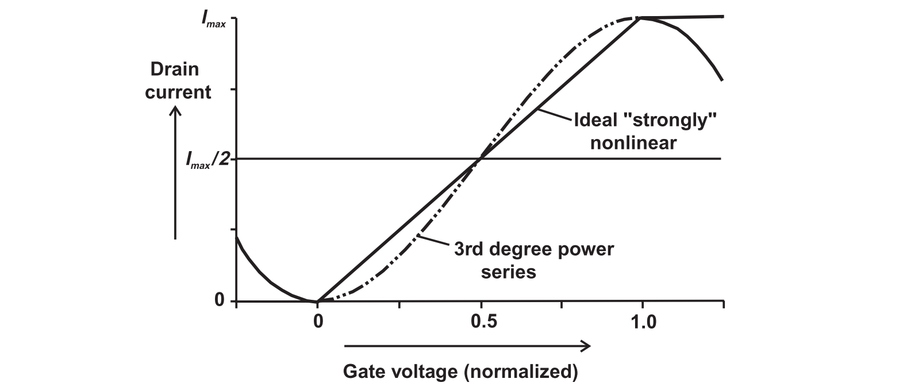
Overdriven Class A Amplifier
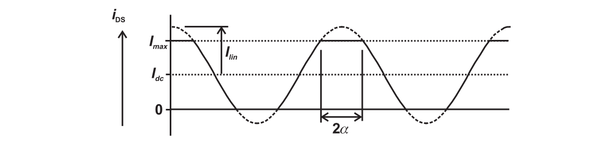
The clipping angle is defined as
Thus, we may define the clipped cosine wave as
Using Fourier series, we can obtain
1 | r = 2/Pi Integrate[Imax Cos[x], {x, 0, a}] + |
The fundamental power and the maximal linear power are defined as
The power compression curve can be plotted as ($I_{max}$ and $R_L$ are normalized)
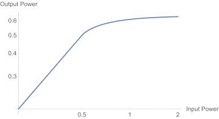
1 | r = 2/Pi Integrate[Imax Cos[x], {x, 0, a}] + |
and the efficiency
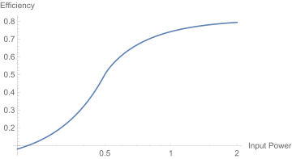
1 | LogLinearPlot[ |
It can be observed at 1-dB compression point, more power is extracted with no extra DC consumption, achieving an efficiency of 63 %. The maximal efficiency is $8/\pi^2$, where a infinite $I_{lin}$ is required. Hence, we can trade linearity for efficiency.
Overdriven Class AB Amplifier
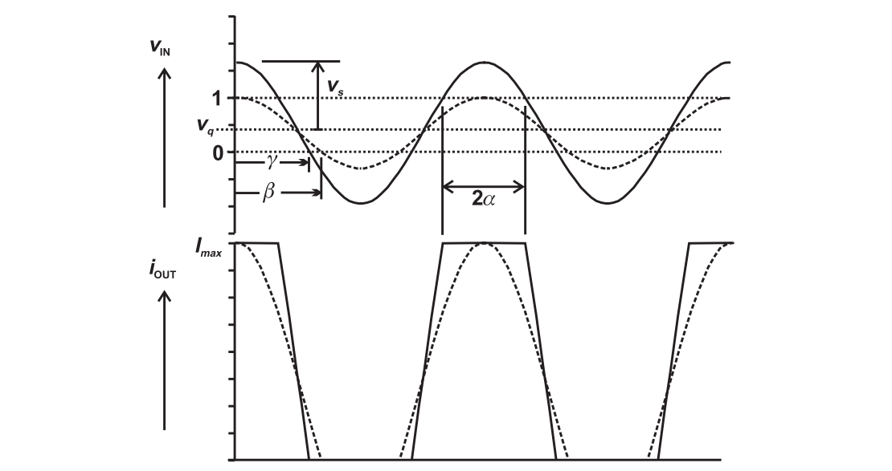
In the analysis, the transconductance is assumed to be 1. The nominal conduction angle is
The maximal linear amplitude is
The overdriven conduction angle is
The clipping angle is given by
The device output current is
Adopting Fourier series, we have
Different from the above analysis, the voltage waveform is assumed to be cosine wave with peak amplitude $V_{dc}$.
Efficiency
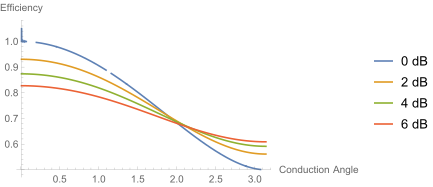
Power
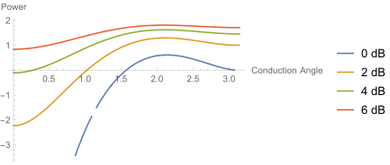
1 | vq = Cos[b]/(Cos[b] - 1); |
For class AB and class A amplifier, input overdrive can increase the efficiency and the output power simultaneously; for class B amplifier the power improvement is offset by a reduction in efficiency; for class C amplifier, the increase in power is dramatic while the efficiency decreases slightly.
Class F Amplifier
Addition of third order in-phase harmonic can lower the peak amplitude.
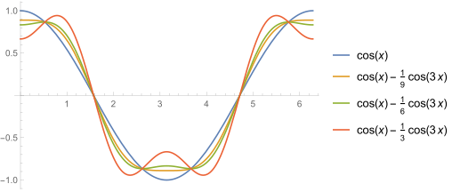
Assume a waveform of
For
- $k<1/9$, there will be a single peak
- $k=1/6$, the peak amplitude reaches global minimum
- $k>1/2.5$, the peak amplitude raises beyond 1
Assuming a class B operation, the efficiency improvement is calculated as
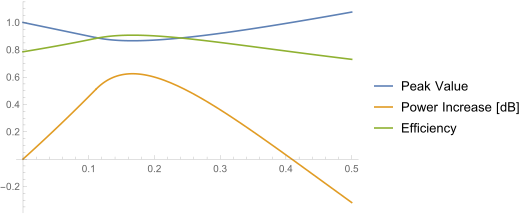
1 | D[Cos[x] - k Cos[3 x], x] |
Consider the maximal flat condition where $k=1/9$, the power improvement is 1.125, and the efficiency is 88.4 %. It is illustrated by the following figure.
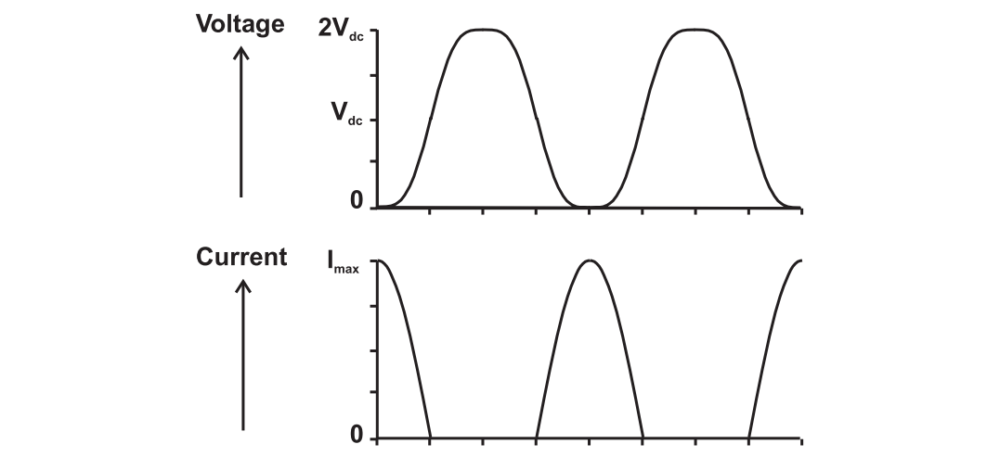
In the configuration, the current waveform is half-wave rectified sinewave, and the voltage is maximally flat third harmonically enhanced sinewave. It can be called class F operation.
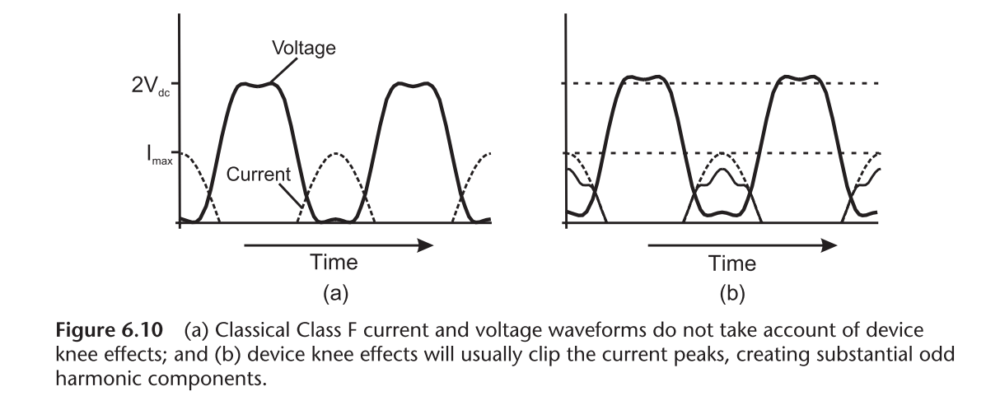
However, a half-wave rectified sine wave has no odd harmonics. To generate a voltage waveform with third order harmonic, the circuit must see an infinite third harmonic impedance, which is unrealizable. In reality, the action of the device knee region is to clip the peaks of the current wave, thus generating substantial amounts of third harmonic.
Class FD Amplifier
Instead of manipulating odd harmonic impedance, the desired waveform can be obtain through clipping.
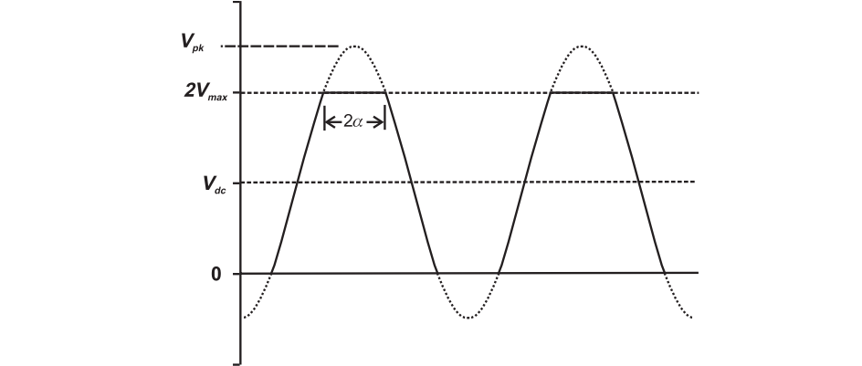
The schematic is as follows
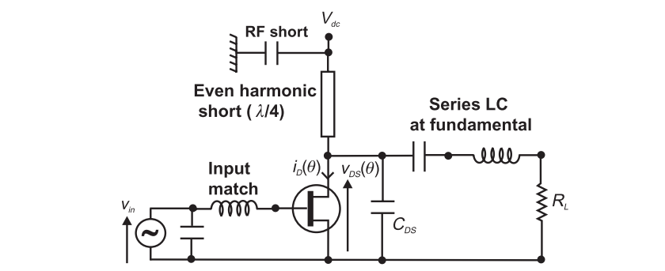
The key elements are
- SCSS even harmonic short
- Fundamental load, whose value is deliberately higher
- Series LC resonator at the fundamental to present open circuit at higher odd harmonics
The voltage waveform should be a sinewave with amplitude of $I_{max}R_L/2$. It would attempt to clip at zero and $2V_{dc}$. The even harmonic short-circuit forces the upper clipping to mirror the actual physical clipping which occurs in the knee region.
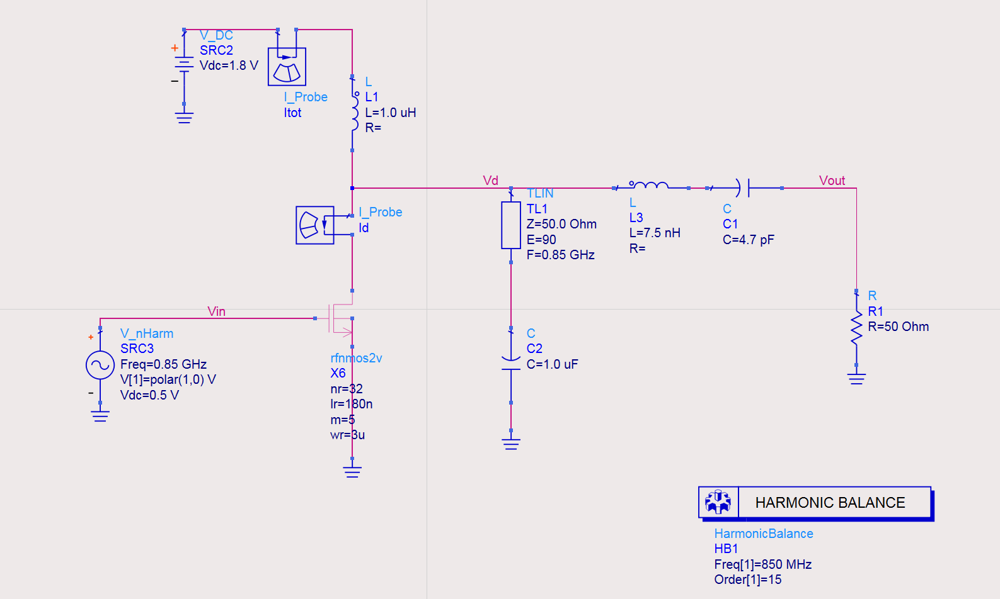
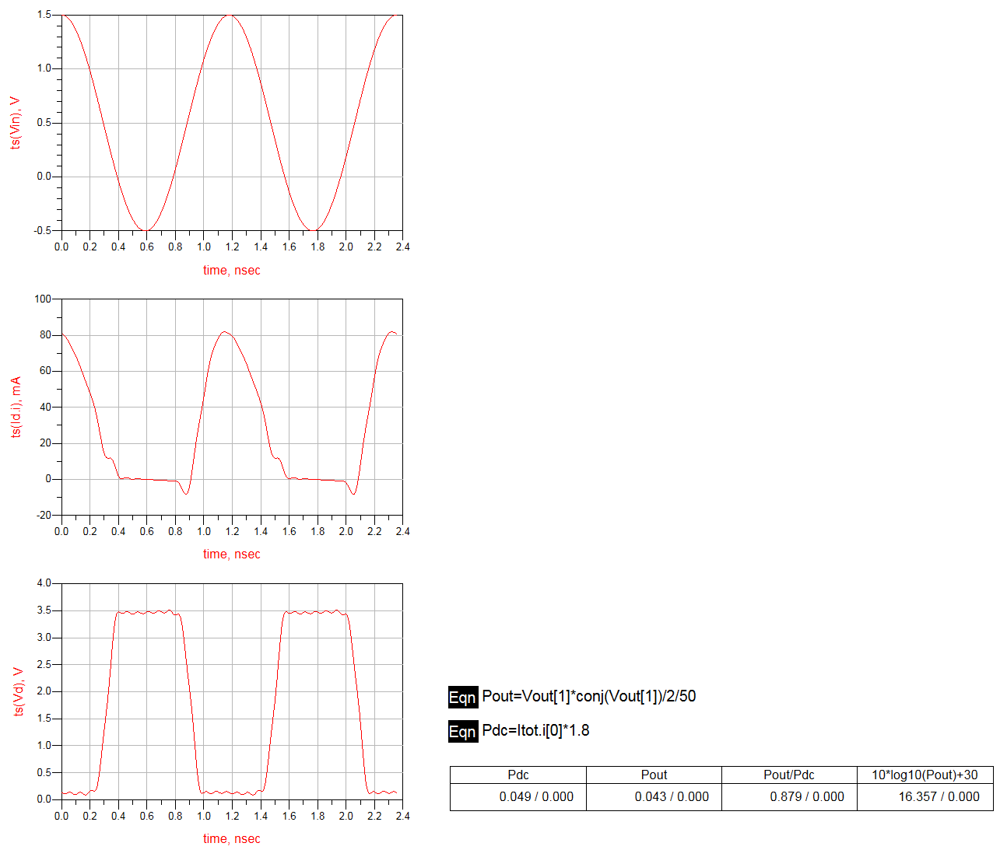
Reference
- S. C. Cripps. RF Power Amplifier for Wireless Communications. Artech House, 2014.
- Post link: https://triblemany.github.io/archives/e1b3e277/class-f-power-amplifier.html
- Copyright Notice: All articles in this blog are licensed under BY-NC-SA unless stating additionally.